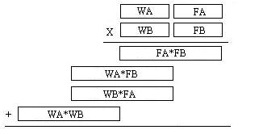
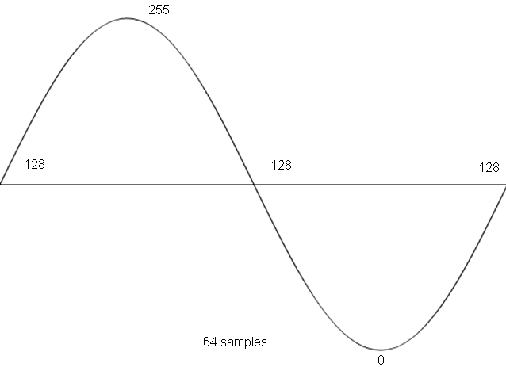

Lesson Notes for Lesson 27
spreadsheet for today's class
See lecture 27 folder in class github repo [class github repo](https://github.com/USAFA-ECE/ece383_wksp)Fixed Point Numbers
Let's review binary points and binary. If you are told that 10010 is a binary number, you can easily determine which decimal value it represents by using this equation:1*24 + 0*23 + 0*22 + 1*21 + 0*20 = 16 + 2 = 18
We'll now use this same method to convert 1.11 to binary. Important to note is that to represent values less than 1 (to the right of the decimal point), negative indices need to be used:
1*20 + 1*2-1 + 1*2-2 = 1 + 0.5 + 0.25 = 1.75
Now, let's convert 1.53125 to binary. This is done by using the tried and true technique of finding the largest power of 2 that will fit into the number, subtracting it, and then continuing the conversion with the difference. This process stops when you reach zero or run out of bits. To illustrate:
- The largest power of two that fits into 1.53125 is 20 = 1.0
- The largest power of two that fits into 0.53125 is 2-1 = 0.5
- The largest power of two that fits into 0.03125 is 2-5 = 0.03125
Thus the binary representation of 1.53125 is 1.10001.
As you can imagine, some rational real numbers do not have a rational binary
representation. For example, the decimal number
0.1 cannot be represented as a finite binary string of 0’s and 1’s - it would repeat endlessly.
You can give the conversion a try if you want to prove this yourself.
Fixed Point Arithmetic
Fixed point numbers, as compared to floating point, are great when the need arises to represent numbers with fractions in a situation where hardware resources are limited or you would like to keep complexity to a minimum. For example, assume that you are working on a circuit which requires you to represent an angle which is not a whole number. This can be done quite nicely using the following representation:
W7 W6 W5 W4 W3 W2 W1 W0 . F7 F6 F5 F4 F3 F2 F1
The 8 W-bits represent the whole portion of the number and the 8 F-bits
represent the fractional portion. This 16-bit number can
be treated as a whole number with some minor book-keeping to keep track
of the binary point.
As an exercise, convert 23.5 and 45.25 to binary using this 16-bit format.
Now, consider the problem of adding the fixed point angles 23.5 and 45.25:
00010111 10000000 (23.5)
+ 00101101 01000000 (45.25)
———————
01000100 11000000 (68.75)
You can see that the addition is completed without concern for the
binary point - it is almost like the binary point doesn’t exist.
It is only when we do multiplication or division that we need to do the “bookkeeping” mentioned above;
you need to keep track of the binary point and put it where it belongs.
In the abbreviated example below, we will assume that
we have a 4-bit representation where the binary point resides in the
middle of the number (after the 2-bit). The result will be 8 bits (4 bits + 4 bits).
The multiplication of 3.75 and 1.25 is shown below.
1111 (3.75)
x 0101 (1.25)
————–
1111
0000
1111
+ 0000
—————-
100.1011 (4.6875)
A more interesting case arises when you have to use a multiplier that
is not the right size. Let’s consider the multiplication
of two 16-bit fixed point numbers representing angles, WA.FA and WB.FB.
From our discussion above, the product requires 32 bits to represent.
According to the rules of multiplication, the binary point
will have to be placed after the 16-bit. Unfortunately, you only have
an 8-bit multiplier on hand that can take in two 8-bit numbers and generate a 16-bit
result. The figure below shows how the operands are split naturally into
8-bit chunks and how the partial product is naturally composed of 4
chunks. You would then have to make sure that you had hardware to perform
the adds of the four resulting 16-bit quantities.

DDS
Direct Digital Synthesis (DDS) is a technique to create periodic waveforms with very precise frequency control using a system with a fixed clock frequency. The periodic function is stored in a look-up table, like the one below, which represents one cycle of a sine wave.
int8 sin[64] = {128,141,153,165,177,189,200,210,219,227,235,241,246,250,253,255,
255,254,252,248,244,238,231,223,214,205,194,183,171,159,147,134,
122,109, 97, 85, 73, 62, 51, 42, 33, 25, 18, 12, 8, 4, 2, 1,
1, 3, 6, 10, 15, 21, 29, 37, 46, 56, 67, 79, 91,103,115,128};

Being computer engineers, let’s use a table which has length which has a factor of 2^n (in this case 2^6 = 64 samples). This will prove to be a good choice later on. Our goal is to reproduce this function for any choice of frequency F, which should be adjustable on-the-fly.
Phase Increment
Let's say that you could provide a new sample from the sine table at 48kHZ (every 21us) through an interrupt to the codec. Since there are 64 values in the sine table, if you incremented the pointer in the sine table by 1 on every interrupt, then you would work your way through the table about every 64 * 21uS = 1.3mS, generating a sine wave with frequency about 750Hz. If you incremented the pointer in the sine table by 2 every interrupt, then you would only require 32 * 21uS = 0.65mS to generate one period of the sine wave, resulting in a frequency of about 1.5kHz (and a sine wave with less samples).Using integer values for the increment, we are limited to very coarse
adjustments in the frequency. For example, how could you use this schema
to generate a sine wave with frequency of 1.0kHz? Well, you would need to
increment the pointer in the sine table by 1.5 every 21uS (trust me, the numbers work out).
This is where the fixed point numbers come in. The 1.5 just mentioned is called the phase increment, and will be represented by a fixed
point number. Let’s look at how the phase
increment, update rate, and size of the LUT are related to the output frequency.
You are: 1) Given a lookup table with 2^N values corresponding to one wavelength of a function 2) Given a sampling rate or a play back rate of f updates/second 3) Given a phase increment x, which every 1/f is added to the index of the LUT f updates x values 1 cycle f*x --------- * --------- * --------- = --- hz 1 second update 2^N values 2^N
Question: Assuming an update rate of 48kHz, a LUT with 1024 entries, and a phase increment of x, expressed as a 10.6 fixed point number, answer the following questions:
- What is the maximum frequency we can generate?
- What is the minimum frequency we can generate?
- What is the smallest change in frequency we can make with the phase increment?
- What phase increment generates a frequency of 440hz?
- How did I arrive at the 10.6 format of the phase increment?